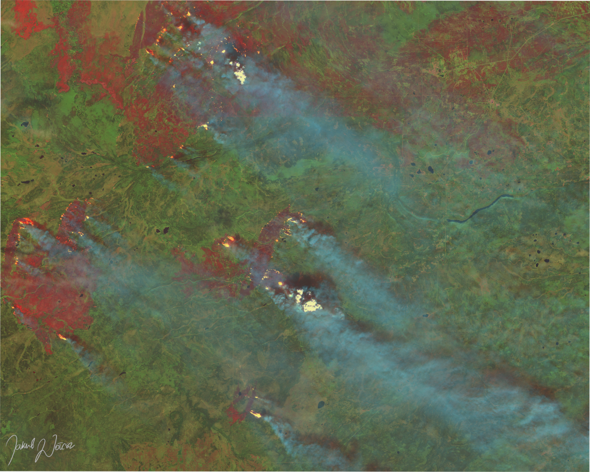

Project/type of work
One of the most powerful uses of satellite imagery is the possibility of calculating several spectral indices. Scientific literature mentions tens, even hundreds, of them for various purposes.
One of such is the application of satellite imagery for predicting, observing, and assessing possible or actual casualties.
These applications can be accurately used,
e.g. in the forestry sector, which, depending on the scale, occupies whole districts, countries, continents and more.
The phenomena shown in the pictures below were the object of my summer self-learning.
I wanted to grasp the force of nature while simultaneously showing hidden beauty seen from above.

Copernicus Sentinel2-L2A — 23 August 2023
The left picture depicts a massive forest fire in the Northern Territories (Canada).
This image was generated using a JS script, enabling the calculation
of spectral indices and online mosaic creation via EO Browser.
The mosaic comprises three spectral bands/indices (NIR, SWIR and one of the vegetation indices). This combination creates a stark contrast in colors, facilitating the rapid differentiation between burned areas (appearing red) and areas unaffected by fire (appearing green in the case of vegetation).
Copernicus Sentinel2-L2A — 10 September 2023.
A gigantic flooded area resulting from heavy rains, near the Trikala city, Greece.
The phenomenon is shown on a modified false-color mosaic, where vegetation appears in the shades of red.
The flood damaged mainly croplands, which can be observed as reddish rectangles under the blue layer of water.